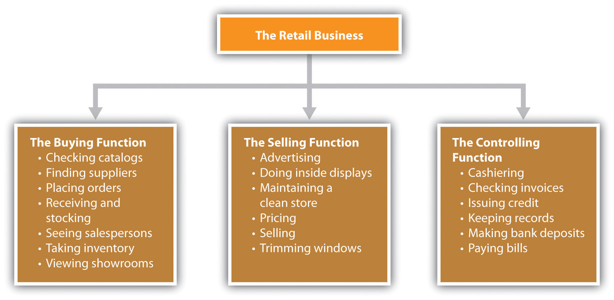
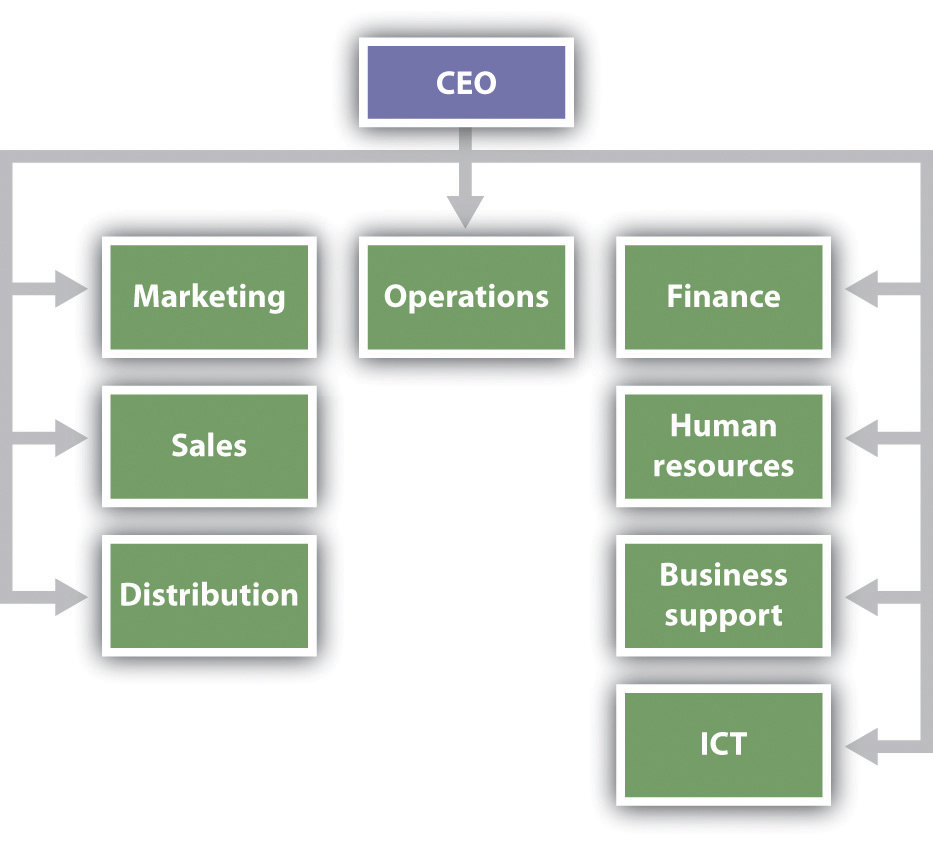
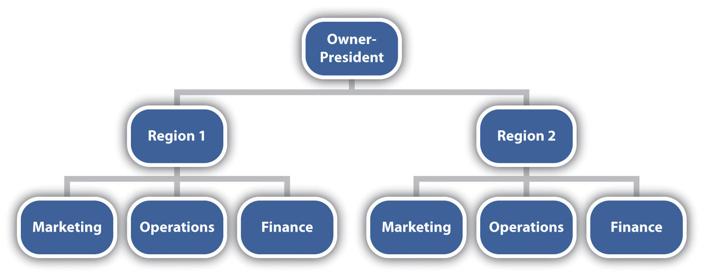
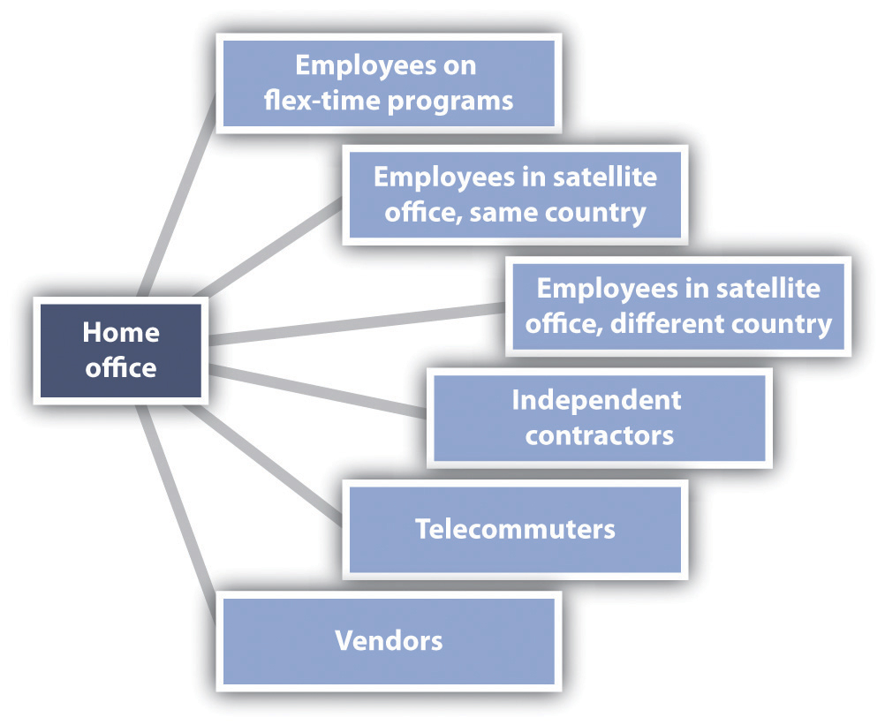

Organizing consists of grouping people and assigning activities so that job tasks and the mission of a business can be properly carried out. The result of the organizing process should be an overall structure that permits interactions among individuals and departments needed to achieve the goals and objectives of a business.David L. Kurtz, Contemporary Business, 13th Edition Update (Hoboken, NJ: John Wiley & Sons, 2011), 272. Although small business owners may believe that they do not need to adhere to the organizing principles of management, nothing could be farther from the truth.
Principles represent guidelines that managers can use in making decisions. They are not laws etched in stone. At times, principles can be used exactly as the way they are stated; at other times they should be modified or even completely ignored. Small business owners must learn through experience when and where to use [the] principles or to modify them [emphasis added]. Principles when used effectively and in the right context often bring organizational efficiencies and thus result in the growth of the business. Some organizing principles…would apply to small businesses as well as they would to large enterprises and would lead to similar benefits.Hal Babson and John Bowen, Instructor’s Manual to Accompany Business: Principles, Guidelines, and Practices (Mason, OH: Atomic Dog Publishing, 2004), 8–9.
There is no single best way to organize. Rather, the organization decision is based on a multitude of factors, including business size, market, product mix, competition, the number of employees, history, objectives and goals, and available financial resources.John M. Ivancevich and Thomas N. Duening, Business: Principles, Guidelines, and Practices (Mason, OH: Atomic Dog Publishing, 2007), 199. Each small business must decide what organizational design best fits the business.
Ivancevich and DueningJohn M. Ivancevich and Thomas N. Duening, Business: Principles, Guidelines, and Practices (Mason, OH: Atomic Dog Publishing, 2007), 200–204. maintain that there are several fundamental issues that managers need to consider when making any kind of organizational decision: clear objectives, coordination, formal and informal organization, the organization chart, formal authority, and centralization versus decentralization. Understanding these fundamentals can facilitate the creation of an organizational structure that is a good fit for a small business.
Objectives “give meaning to the business—and to the work done by employees—by determining what it is attempting to accomplish.”John M. Ivancevich and Thomas N. Duening, Business: Principles, Guidelines, and Practices (Mason, OH: Atomic Dog Publishing, 2007), 200–204. Objectives provide direction for organizing a firm, helping to identify the work that must be done to accomplish the objectives. This work, in turn, serves as the basis on which to make staffing decisions.
The resources of a small business and its employees must be coordinated to minimize duplication and maximize effectiveness.William M. Pride, Robert J. Hughes, and Jack R. Kapoor, Business (Boston: Houghton Mifflin, 2008), 263. Coordination requires informal communication with and among employees every day. All businesses must continually coordinate the activities of others—an effort that should never be underestimated. Business leaders must make sure that employees have the answers to six fundamental questions:“Reinventing the Strategic Communicator,” Strategic Communication Management, August/September 2001, 32–35, as cited in John M. Ivancevich and Thomas N. Duening, Business: Principles, Guidelines, and Practices (Mason, OH: Atomic Dog Publishing, 2007), 201.
When a one-person small business adds employees, some kind of hierarchy will be needed to indicate who does what. This hierarchy often becomes the formal organizationThe details of the roles and the responsibilities of all employees.—that is, the details of the roles and responsibilities of all employees.“Formal Organizational Structure—What Is It?,” The Business Plan, accessed February 2, 2012, www.the-business-plan.com/formal-organizational-structure.html. Formal organization tends to be static, but it does indicate who is in charge of what. This helps to prevent chaos. The formal organizational structure helps employees feel safe and secure because they know exactly what their chain of command is. The downside of a formal organizational structure is that it typically results in a slower decision-making process because of the numerous groups and people who have to be involved and consulted.“Formal Organizational Structure—What Is It?,” The Business Plan, accessed February 2, 2012, www.the-business-plan.com/formal-organizational-structure.html.
The informal organizationAll the connections and relationships that relate to how people throughout an organization actually network to get the job done. is almost never explicitly stated. It consists of all the connections and relationships that relate to how people throughout the organization actually network to get a job done. The informal organization fills the gaps that are created by the formal organization.Marshall Goldsmith and Jon Katzenbach, “Navigating the ‘Informal’ Organization,” Bloomberg BusinessWeek, February 14, 2007, accessed February 2, 2012, www.BusinessWeek.com/careers/content/feb2007/ca20070214_709560.htm. Although the informal organization is not written down anywhere, it has a tremendous impact on the success of a small business because it is “composed of natural leaders who get things done primarily through the power granted to them by their peers.”Charles Hall, Getting Results…for the Hands-On Manager (Saranac Lake, NY: American Management Association, 1986), 40–42. Informal groups and the infamous grapevine are firmly embedded in the informal organization. The grapevine (or water cooler)The informal communications network within an organization, separate from—and sometimes much faster than—formal channels of communication. “is the informal communications network within an organization,…completely separate from—and sometimes much faster than—the organization’s formal channels of communication.”William M. Pride, Robert J. Hughes, and Jack R. Kapoor, Business (Boston: Houghton Mifflin, 2008), 264. Small business owners must acknowledge the existence of the grapevine and figure out how to use it constructively.
Leading Outside the Lines
(click to see video)The formal and informal organizations need to work together to sustain peak performance over time.
The organization chartA visual representation of the formal organization of a business. is a visual representation of the formal organization of a business. The chart shows the structure of the organization and the relationships and relative ranks of its positions; it helps organize the workplace while outlining the direction of management control for subordinates.“Introduction to Organizational Charts,” OrgChart.net, July 18, 2011, accessed February 2, 2012, www.orgchart.net/wiki/Main_Page. Even the one-person small business can use some kind of organization chart to see what functions need to be performed; this will help ensure that everything that should be done is getting done.“Organization Charts,” Small Business Notes, accessed February 2, 2012, www.smallbusinessnotes.com/managing-your-business/organization-charts.html. Figure 12.5 "Organization Chart for a One-Person Small Business" illustrates a simple organization chart for a one-person retail business.“Organization Charts,” Small Business Notes, accessed February 2, 2012, www.smallbusinessnotes.com/managing-your-business/organization-charts.html.
Figure 12.5 Organization Chart for a One-Person Small Business
Organization charts offer the following benefits:“Introduction to Organizational Charts,” OrgChart.net, March 16, 2011, accessed February 2, 2012, www.orgchart.net/wiki/Main_Page; “Organization Chart,” 12 Manage—The Executive Fast Track, accessed February 2, 2012, www.12manage.com/methods_organization_chart.html.
There are, of course, several limitations to organization charts:“Organization Chart,” 12Manage—The Executive Fast Track, accessed February 2, 2012, www.12manage.com/methods_organization_chart.html.
In its early stages, a small business may choose not to create a formal organization chart. However, organization must exist even without a chart so that the business can be successful. Most small businesses find organization charts to be useful because they help the owner or the manager track growth and change in the organizational structure.William M. Pride, Robert J. Hughes, and Jack R. Kapoor, Business (Boston: Houghton Mifflin, 2008), 247. The real challenge is to create an organizational chart that reflects the real world. Small businesses have a definite advantage here because their size allows for more flexibility and manageability.
Burn Your Org Chart
(click to see video)Not all organizational charts reflect the real world.
Formal authorityThe right to give orders and set policy. is “the right to give orders and set policy.”John M. Ivancevich and Thomas N. Duening, Business: Principles, Guidelines, and Practices (Mason, OH: Atomic Dog Publishing, 2007), 203. It is organized according to a hierarchy, typically expressed in the organization chart, where one manager may have authority over some employees while being subject to the formal authority of a superior at the same time. Formal authority also encompasses the allocation of an organization’s resources to achieve its objectives.Samuel C. Certo and S. Trevis Certo, Modern Management: Concepts and Skills (Upper Saddle River, NJ: Prentice Hall, 2012), 276; John M. Ivancevich and Thomas N. Duening, Business: Principles, Guidelines, and Practices (Mason, OH: Atomic Dog Publishing, 2007), 203. The position on the organization chart will be indicative of the amount of authority and formal power held by a particular individual.
Two major types of authority that the small business owner should understand are line and staff. These authorities reflect the existing relationships between superiors and subordinates.Samuel C. Certo and S. Trevis Certo, Modern Management: Concepts and Skills (Upper Saddle River, NJ: Prentice Hall, 2012), 278. Line authorityHaving direct authority over lower positions in the hierarchy. refers to having direct authority over lower positions in the hierarchy. “A manager with line authority is the unquestioned superior for all activities of his or her subordinates.”John M. Ivancevich and Thomas N. Duening, Business: Principles, Guidelines, and Practices (Mason, OH: Atomic Dog Publishing, 2007), 203. The day-to-day tasks of those with line authority involve working directly toward accomplishing an organization’s mission, goals, and objectives.K. J. Henderson, “Features of the Line & Staff Organization Structure,” Chron.com, accessed February 2, 2012, smallbusiness.chron.com/features-line-staff -organization-structure-449.html. Examples of positions with line authority are the president, the vice president of operations, and the marketing manager. In a small business, the owner or the top manager will have line authority over his or her subordinates. The extent of line authority beyond the owner or the top manager will depend on the size of the business and the organizational vision of the owner.
Staff authorityAdvisory only; there is no authority to take action and no responsibility for revenue generation. is advisory only. There is no authority to take action (except when someone is a manager of a staff function, e.g., human resources), and there is no responsibility for revenue generation. Someone with staff authority assists those with line authority as well as others who have staff authority. Examples of staff authority are human resources, legal, and accounting, each of which is relevant to a small business. Staff personnel can be extremely helpful in improving the effectiveness of line personnel. Unfortunately, staff personnel are often the first to go when cutbacks occur. As a small business grows, a decision may be made to add staff personnel because the most significant factor in determining whether or not to add personnel is the size of a business. The larger the organization, the greater the need and the ability to hire staff personnel to provide specialized expertise.Samuel C. Certo and S. Trevis Certo, Modern Management: Concepts and Skills (Upper Saddle River, NJ: Prentice Hall, 2012), 278. Small businesses, however, may prefer to hire outside service providers for staff functions such as legal and accounting services because it would be difficult to keep such people busy full time. Remember, cash flow is king.
Centralization and decentralization are about the amount of authority to delegate. CentralizationVery little authority; job activities are not delegated to subordinates. means that little or no authority and job activities are delegated to subordinates. A relatively small number of line managers make the decisions and hold most of the authority and power. DecentralizationAuthority and job activities are delegated rather than being held by a small management group. is the opposite. Authority and job activities are delegated rather than being held by a small management group.Samuel C. Certo and S. Trevis Certo, Modern Management: Concepts and Skills (Upper Saddle River, NJ: Prentice Hall, 2012), 283; John M. Ivancevich and Thomas N. Duening, Business: Principles, Guidelines, and Practices (Mason, OH: Atomic Dog Publishing, 2007), 204.
Depending on various factors, organizations move back and forth on the centralization-decentralization continuum. For example, managing a crisis requires more centralized decision making because decisions need to be made quickly.Zhiang Lin and Kathleen M. Carley, “Organizational Design and Adaptation in Response to Crises: Theory and Practice,” Academy of Management Proceedings, 2001, B1–B6. A noncrisis or a normal work situation would favor decentralized decision making and encourages employee empowerment and delegated authority.John M. Ivancevich and Thomas N. Duening, Business: Principles, Guidelines, and Practices (Mason, OH: Atomic Dog Publishing, 2007), 204. There are no universally accepted guidelines for determining whether a centralized or a decentralized approach should be used. It has been noted, however, that, “the best organizations are those that are able to shift flexibly from one level of centralization to another in response to changing external conditions.”Francis Fukuyama, “Why There Is No Science of Public Administration,” Journal of International Affairs, Fall 2004, 189–201. Given the flexibility and the responsiveness of small businesses that originate from their size, any movement that is needed along the centralization-decentralization continuum will be much easier and quicker.
Several management principles can be used as guidelines when designing an organizational structure. Although there are many principles to consider, the focus here is on unity of command, division of work, span of control, and the scalar principle. These principles are applicable to small businesses although, as has been said earlier, they should not be seen as etched in stone. They can be modified or ignored altogether depending on the business, the situation at hand, and the experience of management.Samuel C. Certo and S. Trevis Certo, Modern Management: Concepts and Skills (Upper Saddle River, NJ: Prentice Hall, 2012), 33; John M. Ivancevich and Thomas N. Duening, Business: Principles, Guidelines, and Practices (Mason, OH: Atomic Dog Publishing, 2007), 205–206.
Unity of commandNo subordinate has more than one boss. means that no subordinate has more than one boss. Each person in a business should know who gives him or her the authority to make decisions and do the job. Having conflicting orders from multiple bosses will create confusion and frustration about which order to follow and result in contradictory instructions.John M. Ivancevich and Thomas N. Duening, Business: Principles, Guidelines, and Practices (Mason, OH: Atomic Dog Publishing, 2007), 207. In addition, violating the unity of command will undermine authority, divide loyalty, and create a situation in which responsibilities can be evaded and work efforts will be duplicated and overlapping. Abiding by the unity of command will provide discipline, stability, and order, with a harmonious relationship—relatively speaking, of course—between superior and subordinate.“Principles of Management,” Management Study Guide, accessed February 2, 2012, www.managementstudyguide.com/management_principles.htm. Unity of command makes the most sense for everyone, but it is violated on a regular basis.
The division of laborA job can be performed much more efficiently if the jobholder is allowed to specialize. is a basic principle of organizing that maintains that a job can be performed much more efficiently if the work is divided among individuals and groups so that attention and effort are focused on discrete portions of the task—that is, the jobholder is allowed to specialize.Samuel C. Certo and S. Trevis Certo, Modern Management: Concepts and Skills (Upper Saddle River, NJ: Prentice Hall, 2012), 33; John M. Ivancevich and Thomas N. Duening, Business: Principles, Guidelines, and Practices (Mason, OH: Atomic Dog Publishing, 2007), 206. The result is a more efficient use of resources and greater productivity. As mentioned earlier, small businesses are commonly staffed with people who wear multiple hats, including the owner. However, the larger the business, the more desirable it will be to have people specialize to improve efficiency and productivity. To do otherwise will be to slow down processes and use more resources than should be necessary. This will have a negative impact on the bottom line.
Span of control (span of management)The number of people or subordinates that a manager supervises. refers to the number of people or subordinates that a manager supervises. The span of control typically becomes smaller as a person moves up the management hierarchy. There is no magic number for every manager. Instead, the number will vary based on “the abilities of both the manager and the subordinates, the nature of the work being done, the location of the employees, and the need for planning and coordination.”Marce Kelly and Jim McGowen, BUSN (Mason, OH: South-Western, 2008), 206. The growing trend is to use wider spans of control. Companies are flattening their structures by reducing their layers of management, particularly middle management. This process has increased the decision-making responsibilities that are given to employees.Ashim Gupta, “Organization’s Size and Span of Control,” Practical Management, January 10, 2010, accessed February 2, 2012, www.practical-management.com/Organization-Development/Organization-s-size-and-span-of-control.html; Marce Kelly and Jim McGowen, BUSN (Mason, OH: South-Western, 2008), 206; David L. Kurtz, Contemporary Business, 13th Edition Update (Hoboken, NJ: John Wiley & Sons, 2011), 275. As a small business grows, there will likely be more management hierarchy unless the small business owner is committed to a flatter organization. Either approach will have implications for span of control.
The scalar principleAuthority and responsibility should flow in a clear, unbroken line from the highest manager to the lowest manager. maintains “that authority and responsibility should flow in a clear, unbroken line from the highest to the lowest manager.”John M. Ivancevich and Thomas N. Duening, Business: Principles, Guidelines, and Practices (Mason, OH: Atomic Dog Publishing, 2007), 207. Abiding by this principle will result in more effective decision making and communication at various levels in the organization. Breaking the chain would result in confusion about relationships and employee frustration. Following this principle is particularly important to small businesses because the tendency may otherwise be to operate on a more informal basis because of the size of the business. This would be a mistake. Even a two-person business should pay attention to the scalar principle.
Knowledge about organization structures is important for a small business that is already up and running as well as a small business in its early stages. Organizations are changing every day, so small business owners should be flexible enough to change the structure over time as the situation demands, perhaps by using the contingency approachThere is no “one best” structure appropriate for every organization. The “best” structure for an organization fits its needs for the current situation.. “The contingency approach to the structure of current organizations suggests there is no ‘one best’ structure appropriate for every organization. Rather, this approach contends the ‘best’ structure for an organization fits its needs for the situation at the time.”Patricia M. Buhler, “Changing Organizational Structures and Their Impact on Managers,” Supervision, 2011, 24–26. If a small business employs fewer than fifteen people, it may not be necessary to worry too much about its organizational structure. However, if the plans for the business include hiring more than fifteen people, having an organizational structure makes good sense because it will benefit a company’s owner, managers, employees, investors, and lenders.“A Strong Business Organization Structure Is Paramount to Business Success,” The Business Plan, accessed February 2, 2012, www.the-business-plan.com/business-organization-structure.html. There are many structure options. Functional, divisional, matrix, and network or virtual structures are discussed here.
The functional structureOrganized according to job or purpose in the organization. is overwhelmingly the choice of business start-ups and is probably the most common structure used today. This structure organizes a business according to job or purpose in the organization and is most easily recognized by departments that focus on a single function or goal. (See Figure 12.6 "An Example of a Functional Structure" for an example of a functional structure.) A start-up business is not likely to have an organization that looks like this. There may be only one or two boxes on it, representing the founder and his or her partner (if applicable).“Small Business Management Skills,” How to Start a Small Business, accessed February 2, 2012, www.how-to-start-a-small-business.com/small-business-management-skills .html. As a small business grows, the need for additional departments will grow as well.
Figure 12.6 An Example of a Functional Structure
Source: “Small Business Management Skills,” How to Start a Business, accessed February 2, 2012, http://www.how-to-start-a-small-business.com/small-business-management-skills.html.
The functional structure gives employees and their respective departments clear objectives and purpose for their work. People in accounting can focus on improving their knowledge and skills to perform that work. This structure has also been shown to work well for businesses that operate in a relatively stable environment.John M. Ivancevich and Thomas N. Duening, Business: Principles, Guidelines, and Practices (Mason, OH: Atomic Dog Publishing, 2007), 210; Kristie Lorette, “Organizational Structure Types in Companies,” Chron.com, accessed February 2, 2012, smallbusiness.chron.com/organizational-structure-types-companies-2791 .html.
At the same time, the functional structure can create divisions between departments if conflict occurs,Kristie Lorette, “Organizational Structure Types in Companies,” Chron.com, accessed February 2, 2012, smallbusiness.chron.com/organizational-structure-types -companies-2791.html. and it can become an obstruction if the objectives and the environment of the business require coordination across departments.John M. Ivancevich and Thomas N. Duening, Business: Principles, Guidelines, and Practices (Mason, OH: Atomic Dog Publishing, 2007), 211.
The divisional structureA decentralized version of the functional structure in which functions still exist in an organization but are based on product, geographic area or territory, or customer. can be seen as a decentralized version of the functional structure. The functions still exist in the organization, but they are based on product, geographic area or territory, or customer. Each division will then have its own functional department(s).Kristie Lorette, “Organizational Structure Types in Companies,” Chron.com, accessed February 2, 2012, smallbusiness.chron.com/organizational-structure-types -companies-2791.html. (See Figure 12.7 "An Example of a Divisional Structure" for an example of a divisional structure.)
Figure 12.7 An Example of a Divisional Structure
The divisional structure can work well because it focuses on individual geographic regions, customers, or products. This focus will enable greater efficiencies of operation and the building of “a common culture and esprit de corps that contributes both to higher morale and a better knowledge of the division’s portfolio.”Jason Gillikin, “Advantages and Disadvantages of Divisional Organizational Structure,” Chron.com, accessed February 2, 2012, smallbusiness.chron.com/advantages-disadvantages-divisional-organizational-structure-611.html. There are, of course, disadvantages to this structure. Competing divisions may turn to office politics, rather than strategic thinking, to guide their decision making, and divisions may become so compartmentalized as to lead to product incompatibilities.Jason Gillikin, “Advantages and Disadvantages of Divisional Organizational Structure,” Chron.com, accessed February 2, 2012, smallbusiness.chron.com/advantages-disadvantages-divisional-organizational-structure-611.html.
As a small business starts to grow in the diversity of its products, in the geographic reach of its markets, or in its customer bases, there is an evolution away from the functional structure to the divisional structure. However, significant growth would be needed before the divisional structure should be put into place.
The matrix structureBrings together specialists from different areas of a business to work on different projects on a short-term basis. combines elements of the functional and the divisional structures, bringing together specialists from different areas of a business to work on different projects on a short-term basis. Each person on the project team reports to two bosses: a line manager and a project manager. (See Figure 12.8 "An Example of a Matrix Structure" for an example of a matrix structure.) The matrix structure, popular in high-technology, multinational, consulting, and aerospace firms and hospitals, offers several key advantages, including the following: flexibility in assigning specialists, flexibility in adapting quickly to rapid environmental changes, the ability to focus resources on major products and problems, and creating an environment where there is a higher level of motivation and satisfaction for employees.Marce Kelly and Jim McGowen, BUSN (Mason, OH: South-Western 2008), 208; David L. Kurtz, Contemporary Business, 13th Edition Update (Hoboken, NJ: John Wiley & Sons, 2011), 278; Kristie Lorette, “Organizational Structure Types in Companies,” Chron.com, accessed February 2, 2012, smallbusiness.chron.com/organizational -structure-types-companies-2791.html. The disadvantages include the following: the violation of the “one boss” principle (unity of command) because of the dual lines of authority, responsibility, and accountability;Robert C. Ford and W. Alan Randolph, “Cross-Functional Structures: A Review and Integration of Matrix Organization and Project Management,” Journal of Management, June 1992, 2. employee confusion and frustration from reporting to two bosses; power struggles between the first-line and the project managers; too much group decision making; too much time spent in meetings; personality clashes; and undefined personal roles.John M. Ivancevich and Thomas N. Duening, Business: Principles, Guidelines, and Practices (Mason, OH: Atomic Dog Publishing, 2007), 214; William M. Pride, Robert J. Hughes, and Jack R. Kapoor, Business (Boston: Houghton Mifflin, 2008), 259. The disadvantages notwithstanding, many companies with multiple business units, operations in multiple countries, and distribution through multiple channels have discovered that the effective use of a matrix structure is their only choice.Jay R. Galbraith, “Matrix Is the Ladder to Success,” Bloomberg BusinessWeek, August 2009, accessed February 2, 2012, www.BusinessWeek.com/debateroom/archives/2009/08/matrix_is_the_l.html.
Figure 12.8 An Example of a Matrix Structure

Source: “Sample Organization Charts: Matrix Organizational Structure,” Vertex41.com, accessed February 2, 2012, http://www.vertex42.com/ExcelTemplates/organizational-chart.html.
The matrix structure is for project-oriented businesses, such as aerospace, construction, or small manufacturers of the job-shop variety (producers of a wide diversity of products made in small batches).
The virtual organization (or network organization)Administration is the primary function performed; other functions—such as marketing, engineering, production, and finance—are outsourced to other organizations or individuals. is becoming an increasingly popular business structure as a means of addressing critical resource, personnel, and logistical issues. (See Figure 12.9 "An Example of a Virtual Organization" for an example of a virtual organization.) Administration is the primary function performed; other functions—such as marketing, engineering, production, and finance—are outsourced to other organizations or individuals. Individual professionals may or may not share office space, the organization is geographically distributed, the members of the organization communicate and coordinate their work through information technology, and there is a high degree of informal communication. The barriers of time and location are removed.Manju K. Ahuja and Kathleen M. Carley, “Network Structure in Virtual Organizations,” Organization Science 10, no. 6 (November 1999): 741–57; Les Phang, “Understanding Virtual Organizations,” ISACA Journal 6 (2001): 42–47; William M. Pride, Robert J. Hughes, and Jack R. Kapoor, Business (Boston: Houghton Mifflin, 2008), 260.
Figure 12.9 An Example of a Virtual Organization
Source: “Supporting Skills,” Eviton, Inc., accessed February 2, 2012, http://eviton.com/organizations.htm.
The positives associated with a virtual organization include reduced real-estate expenses, increased productivity, higher profits, improved customer service, access to global markets, environmental benefits (such as reduced gas mileage for employees, which contributes to reduced auto emissions), a wider pool of potential employees, and not needing to have all or some of the relevant employees in the same place at the same time for meetings or delivering services.John M. Ivancevich and Thomas N. Duening, Business: Principles, Guidelines, and Practices (Mason, OH: Atomic Dog Publishing, 2007), 214; Les Phang, “Understanding Virtual Organizations,” ISACA Journal 6 (2001): 42–47. The negatives include setup costs; some loss of cost efficiencies; cultural issues (particularly when working in the global arena); traditional managers not feeling secure when their employees are working remotely, particularly in a crisis; feelings of isolation because of the loss of the camaraderie of the traditional office environment; and a lack of trust.John M. Ivancevich and Thomas N. Duening, Business: Principles, Guidelines, and Practices (Mason, OH: Atomic Dog Publishing, 2007), 214; Les Phang, “Understanding Virtual Organizations,” ISACA Journal 6 (2001): 42–47.
The virtual organization can be quite attractive to small businesses and start-ups. By outsourcing much of the operations of a business, costs and capital requirements will be significantly reduced and flexibility enhanced. Given the lower capital requirements of a virtual business, some measures of profitability (e.g., return on investment [ROI] and return on assets [ROA]), would be significantly increased. This makes a business much more financially attractive to potential investors or banks, which might provide funding for future growth. ROIA performance measure used to evaluate the efficiency of an investment or compare the efficiency of several investments. “is a performance measure used to evaluate the efficiency of an investment or to compare the efficiency of a number of investments.”“Return on Investment—ROI,” Investopedia, accessed February 2, 2012, www.investopedia.com/terms/r/returnoninvestment.asp. ROAAn indicator of how profitable a business is relative to its assets and indicates how efficient management is at using its assets to generate earnings. is “an indicator of how profitable a company is relative to its assets…[giving] an idea as to how efficient management is at using its assets to generate earnings.”“Return on Assets—ROA,” Investopedia, accessed February 2, 2012, www.investopedia.com/terms/r/returnonassets.asp.
Thinking and rethinking the business organization structure is important for all businesses—large or small. Conditions, products, and markets change. It is important to be flexible in creating a business structure that will best allow a business to operate effectively and efficiently. Each of the following should be considered: